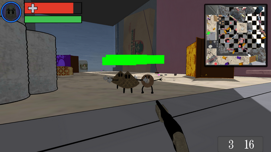
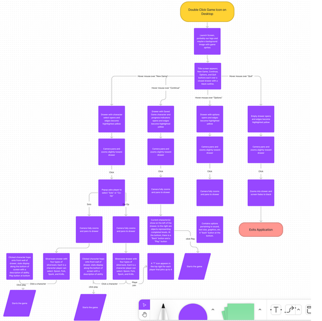
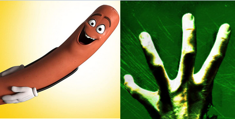

| Game Description | About Project | The Idea |
|---|---|---|
|
 Silver War is a first-person shooter where the player is a piece of silverware using tiny guns to dismember zombie food enemies. The cartoony art style mixed with explosive action makes for a thrilling playthrough that anybody can enjoy. |
 Silver war is also the most polished project I've ever worked on. With more than 400 hours of effort from myself and two designers, the scope of the game is much larger than others in my collection. |
 Silver War was born when my project partners thought it would be funny to put googly eyes on food. They began envisioning a silly game in the spirit of something like Sausage Party. We set out to make a silly crossover between crazy food and zombie games like Left 4 Dead. |
Silver War was a capstone level university project in which we were alotted
twenty weeks to create a polished, functional game with 10+ minutes of
gameplay in groups of three. The scope of the project made for a time crunch
that forced us to work on a schedule. Using industry tactics like Agile-SCRUM
and technical design documents, we were able to create fluid goals that allowed
us to create a solid project well within the time crunch.
A lot of things changed from the way we originally planned Silver War to go.
One of the biggest changes was that we needed to cut co-op multiplayer from
the scope. As our stretch goal, it wasn't a huge milestone to miss -- but
it defeated the purpose of features such as selecting a character, or
having unique bonuses for characters.
Another thing cut from the scope was the Caprisun enemy. While all enemies in
the game currently use melee attacks, the Caprisun was a ranged attacker. While
this enemy would have made our waves more dynamic, we unfortunately ran out of
time to model them.
One of my favorite prototype features was enemies that came out of cereal boxes.
The player would walk up to a closed cereal box, and it would suddenly burst
open with cheerio enemies.
Unfortunately, we lost flexibility to move the flaps on boxes when we modelled
them with textures.
Despite all of these feature changes, Silver War turned out to be an incredible
success. The gameplay is longer than we planned for. It also contains new features
not from the documents. Some of these include explosions, realtime world events,
and interactive objects. Overall, the game is more than capable of releasing as
a small scale indie game. I learned a lot from the work I put into this game as a developer.